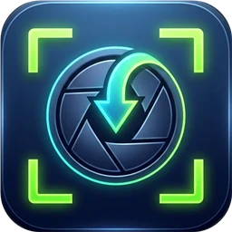

Control
Key or scroll
Send Up, Down, Left, or Right arrow keys, or scroll the mouse wheel by a configurable notch count.
Automatic page-by-page screenshots. AutoShot presses an arrow key or scrolls a window for you, captures a screenshot after each step, and stops by itself when the page stops changing.

Hosted on SourceForge with SHA-256 checksums. Linux builds require an X11 session for window input and capture.
Designed for long documents, e-books, slide decks, galleries, and chat histories.
Send Up, Down, Left, or Right arrow keys, or scroll the mouse wheel by a configurable notch count.
Capture the whole window, its inner content area, the full monitor, or a custom box drawn with your pointer.
Stops automatically when consecutive frames stop changing so you never save trailing duplicates.
Export individual images or compile an entire multi-page document directly into a single PDF.
Start and stop capture with a customizable global shortcut (F8 by default) without switching focus.
Under 300 KB standalone executable on Windows and self-contained archives on Linux with zero runtime setup.